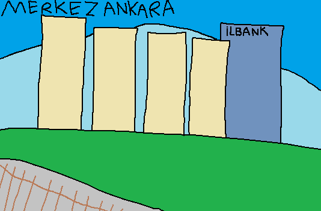

Kuzenimle "Çin Toplu Konutları" diye dalga geçtiğim sonra da yakınımın yaşadığını öğrendiğim müteahhit binası. İlbank binasının yanında. En azından bir yanında Ankara Üniversitesi Tandoğan Yerleşkesi ve Güneş Meydanı, diğer yanında da Başkent Millet Bahçesi var.